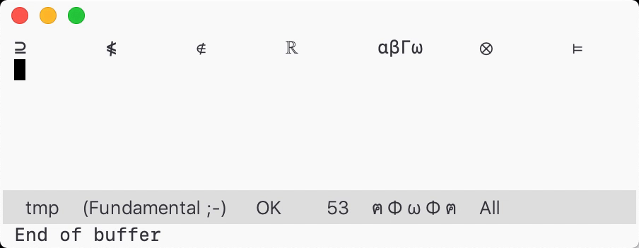

Insert Math Symbol in Emacs
Typing math symbols is often a tedious task. You either search through a bunch of symbol panels and click the one you want, or type TeX macros that you may or may not remember, or execute complex key bindings to enter a limited set of symbols. I recently learned about TeXmacs’ solution to symbol insertion: you type a symbol that’s more or less similar to the one you have in mind and use TAB to mutate it into the one desired. Say you want to enter ⊂, you type < and hit TAB several times, go through ≤, ∈, ⊏ and finally arrive at ⊂. It’s easy to remember, fast to insert, and can encode a lot of symbols.
TeXmacs is great, but I want to do the same thing in Emacs. Here is a demo of the command I use:

It has two features mimicking TeXmacs: 1) you can hit a key (say TAB) and go through each variant of the symbol before point. 2) you can add an “accent modifier” after the symbol and hit the same key (TAB) to accent it. In the above demo I accented ⊃ into ⊇ by adding a _ accent modifier and hitting TAB.
Bind transform-previous-char to some key, and that key would do both tasks: transform and accent. You can also hit C-n/p to go back and forth when transforming. If you want to customize the symbols, look at transform-list and accent-list. And make sure accent modifiers is not in transform-list, in that case it is always treated as a modifier, rather than a variant.
There are some minor limitations. First, my command doesn’t support multi-character symbols; second, accent modifiers are order sensitive, e.g., you have to apply / after _.
I have set up some default variant and accents.
Variant *×·⊗⊙ +⊕ |⊦⊨ /÷ \∖ <∈⊂⊏ >∋⊃⊐ =≈ v∨∪ ^∧∩ 0∅ Rℝ Zℤ Qℚ Nℕ Cℂ aαΑ∀ bβΒ gγΓ dδΔ eεΕ∃ zζΖ hηΗ qθΘ iιΙ kκΚ lλΛ mμΜ nνΝ∩ xξΞ oοΟ pπΠ rρΡ sσΣ tτΤ yυΥ fφΦ cχΧ uψΨ∪ wωΩ Accent _: <≤ ⊂⊆ ⊏⊑ >≥ ⊃⊇ ⊐⊒ /: =≠ <≮ ≤≰ ∈∉ ⊂⊄ ⊆⊈ >≯ ≥≱ ∋∌ ⊃⊅ ⊇⊉
Finally, the code. You can also find it in my config. Make sure you enable lexical binding.
;; -*- lexical-binding: t; -*- (require 'cl-lib) (require 'subr-x) (defvar transform-list (mapcar (lambda (x) (mapcar #'identity x)) (split-string (string-join '("*×·⊗⊙ +⊕ |⊦⊨ /÷ \\∖" "<∈⊂⊏ >∋⊃⊐ =≈" "v∨∪ ^∧∩ 0∅" "Rℝ Zℤ Qℚ Nℕ Cℂ" "aαΑ∀ bβΒ gγΓ dδΔ eεΕ∃ zζΖ hηΗ qθΘ" "iιΙ kκΚ lλΛ mμΜ nνΝ∩ xξΞ oοΟ pπΠ" "rρΡ sσΣ tτΤ yυΥ fφΦ cχΧ uψΨ∪ wωΩ") " "))) "Each element of the list is a list of related variants.") (defvar accent-list (mapcar (lambda (c) (cons (car c) (mapcar (lambda (s) (mapcar #'identity s)) (split-string (cdr c))))) '((?_ . "<≤ ⊂⊆ ⊏⊑ >≥ ⊃⊇ ⊐⊒") (?/ . "=≠ <≮ ≤≰ ∈∉ ⊂⊄ ⊆⊈ >≯ ≥≱ ∋∌ ⊃⊅ ⊇⊉"))) "Each car is the accent modifier, cdr is a list ((ORIGINAL ACCENT) ...).") (defun transform--get-variant-list (char) "Find CHAR in ‘transform-list’, return (index . variant-list). Return nil if none found. CHAR is a character." (catch 'ret (dolist (variant-list transform-list nil) (cl-loop for variant in variant-list for idx from 0 to (1- (length variant-list)) if (eq variant char) do (throw 'ret (cons idx variant-list)))))) (defun transform--make-step-fn (variant-list init-idx) "Return a stepping function that steps through each variation. At first the index is INIT-IDX. VARIANT-LIST is a list of variant characters. The step function takes a integer “step” that changes the index of current variant, e.g. 1 is next, -1 is prev. It returns the current index after adding the “step” with current index. The step function with step across the variant list and change the character before point to the current variant." (let ((variant-index (or init-idx 0))) (lambda (step) ;; step (setq variant-index (+ step variant-index)) ;; manage ring (when (eq variant-index (length variant-list)) (setq variant-index 0)) (when (< variant-index 0) (setq variant-index (1- (length variant-list)))) ;; edit & message (atomic-change-group (delete-char -1) (insert (nth variant-index variant-list))) (message "%s" (transform--make-message variant-list variant-index))))) (defun transform--make-message (variant-list index) "Make a string that displays each variant in VARIANT-LIST. Highlight the one marked by INDEX." (string-join (cl-loop for variant in variant-list for idx from 0 to (1- (length variant-list)) if (eq idx index) collect (propertize (char-to-string variant) 'face 'highlight) else collect (char-to-string variant)) " ")) (defun transform-previous-char () "Transform char before point. If previous char is “/” or “_”, apply ‘accent-previous-char’ instead." (interactive) (if (member (char-before) (mapcar #'car accent-list)) (accent-previous-char) (if-let ((c (transform--get-variant-list (char-before)))) (let* ((index (car c)) (variant-list (cdr c)) (step-fn (transform--make-step-fn variant-list index)) (map (let ((map (make-sparse-keymap))) (define-key map (kbd "C-n") (lambda () (interactive) (funcall step-fn 1))) (define-key map (kbd "C-p") (lambda () (interactive) (funcall step-fn -1))) (define-key map (this-command-keys) (lambda () (interactive) (funcall step-fn 1))) map))) (funcall step-fn 1) (set-transient-map map t)) (user-error "No variant found")))) (defun accent-previous-char () "Accent previous char by its trailing accent modifier." (interactive) (let ((modifier-list (mapcar #'car accent-list))) (if (not (member (char-before) modifier-list)) ;; base case, prev char is normal char nil ;; recursion case <char><mod>| (let ((modifier (char-before)) old-char new-char) (atomic-change-group (delete-char -1) (accent-previous-char) (setq old-char (char-before)) ;; find accented char (setq new-char (car (alist-get old-char (alist-get modifier accent-list)))) (if (or (not new-char) (eq new-char 32)) (user-error "No accent found") (delete-char -1) (insert new-char)))))))